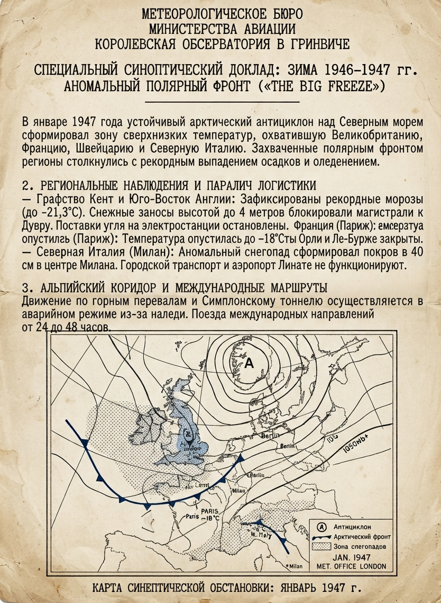

Пролог

Второй звонок так и не прозвенел. В 1947 мир не стал безопаснее: старая бернская Сетка растворилась, уступив место жестким структурам новой эпохи.
В 1947 году скрытые оперативные каналы протянулись по оси Лондон — Париж — Марсель — Милан. За дипломатическими спорами вокруг Палестины разворачивался противоречивый израильский конфликт.
Первые заморозки Холодной войны ударили по культурным связям, превратив концертные залы и музыкантов в дипломатические инструменты: политические убийства планируются под музыку великих мастеров на подмостках великих сцен.
Фигуры на доске те же, но партия больше не принадлежит им. У каждой остался один ход. Каждый решает за себя, но решение порой принимают другие. Одуванчики – это выносливые многолетние цветы, которые каждый июнь отцветают, чтобы проснуться следующей весной.

Авторские права на произведение охраняются законом Российской Федерации.
Единый номер депонирования литературного произведения в реестре: 226061100096.